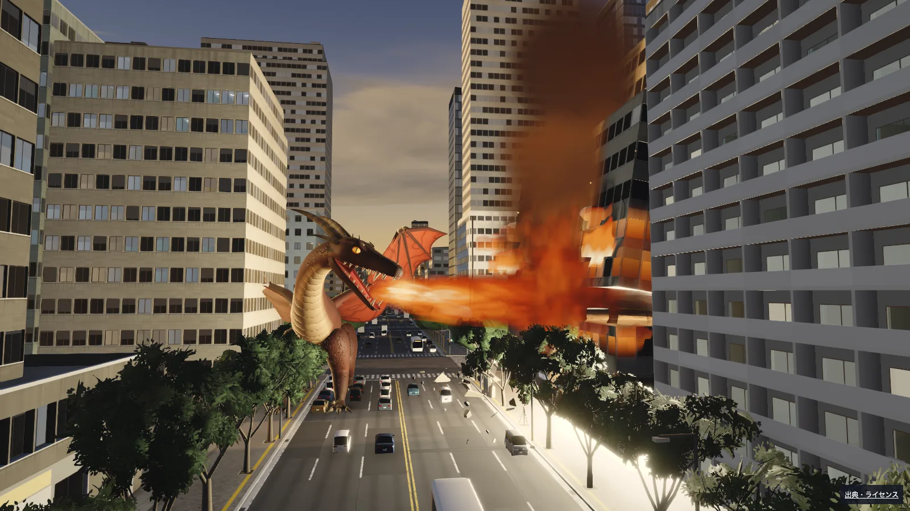

紅竜 くれないりゅう
空から降りて、炎で焼く。

今度は、怪獣になる。
飛ぶ。焼く。押し倒す。
3体の怪獣で、3分間の街壊し。
PCはキーボードとマウス、スマホは横向きでタッチ操作。
WebGL2対応ブラウザ向け。初回は最大約37MBの読み込みがあります。端末によって動作が重くなる場合があります。
空から降りて、炎で焼く。
素早く飛んで、雷をつなぐ。
地を駆けて、ビルを押し倒す。
スマホは横向きにして、左の丸で移動。
右の面をなぞって見回し、技のボタンを押します。
主砲は長押し。画面上の「一時停止」で設定・やり直し。
WASD 移動 · マウスで見回す
左クリック長押しで主砲 · 右クリックで爪／角
Q 尾 · E 大技 · Space 飛ぶ／跳ぶ
Shift 急降下／突進 · Esc 一時停止
開始画面で怪獣を選択。音量は一時停止中に調整できます。スマホは軽量画質固定です。強い光と画面の揺れがあります。
スマートフォンのタッチ操作に対応。縦向きや別アプリへの切り替えでは一時停止します。
街と怪獣を読み込んでいます…